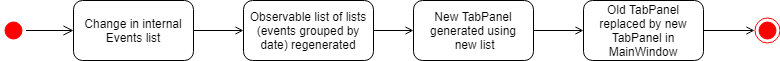

Overview
EventsPlus+ is a Command Line Interface (CLI) desktop address book application catered for busy university students to manage their contacts, events, project meetings and ad-hoc events efficiently. It aims to simplify some of the more time-consuming administrative tasks such as coordinating location and date of ad-hoc events. The user interacts with it using a CLI, and it has a GUI created with JavaFX. It is written in Java, and has more than 10 kLoC.
Summary of contributions
-
Code contributed: [RepoSense]
-
Major enhancement: added the Events feature
-
What it does: Allows the user to manage events with event tags and reference to existing contacts in EventsPlus+.
-
Justification: Users should be able to use the application to manage his/her events, and should be able to incorporate contacts in EventsPlus+ into events, since both are features of the application.
-
Highlights: Users are able to view the crucial person information from events by hovering over the contact in the event, without searching for the person directly. Event tags are standardized based on a list of event tags displayed, which can be modified by the user. This feature sets the foundation for the inclusion of more event-related functionalities in future.
-
-
Other enhancements:
-
added the command auto-completion feature
-
What it does: Allows user to use the
Tabkey to auto-complete command words. -
Justification: Saves time on typing commands and reduces effort of remembering full commands.
-
-
-
Other contributions:
-
Project management:
-
Set up Travis, Appveyor and auto-publishing of documentation
-
Managed releases
v1.2andv1.4.1on GitHub
-
-
Enhancements to existing features:
-
Added the add event/delete event/view event contacts/edit event address functionalities and tests (Pull requests #60, #83, #88, #95, #119, #120, #121, #130, #138, #177)
-
Added the add event tag/find event functionalities and tests (Pull requests #138, #175)
-
Added the command auto-completion feature (Pull request #174)
-
Re-organized
BrowserPanelto be grouped under aTabPanel(Pull request #88)
-
-
Documentation:
-
Community:
-
Contributions to the User Guide
Given below are some excerpts of the sections I contributed to the User Guide. They showcase my ability to write documentation targeting end-users. |
Adding an event: addEvent, alias ae
Adds an event in the system with information specified by the user.
Format: addEvent n/EVENT_NAME dsc/EVENT_DESCRIPTION d/DATE(YYYY-MM-DD) st/START_TIME(HHMM) et/END_TIME(HHMM) a/EVENT_ADDRESS [i/CONTACT_INDEX]… [t/EVENT_TAG]…
|
Examples:
-
Without contacts and event tags
addEvent n/Doctor Appointment dsc/Consultation d/2018-10-14 st/1030 et/1200 a/123, Clementi Rd, 1234665 -
With a single contact
list
addEvent n/Doctor Appointment dsc/Consultation d/2018-10-14 st/1030 et/1200 a/123, Clementi Rd, 1234665 i/1 -
With multiple contacts
Find Betsy Tim John
addEvent n/Meeting dsc/Project meeting d/2018-10-14 st/1030 et/1200 a/123, Clementi Rd, 1234665 i/1 i/2 i/3 -
With contact indices and event tags
addEventTag t/Meeting t/Appointment
addEvent n/Doctor Appointment dsc/Consultation d/2018-10-14 st/1030 et/1200 a/123, Clementi Rd, 1234665 i/1 t/Meeting t/Appointment
In EventsPlus+, the events can be found in the Events tab,
and are displayed according to their date, in decreasing date order.
Within each date, the events are ordered from earliest to latest.
Viewing an event’s contacts: seeEventContacts, alias sec
Shows an event’s contacts in the persons list. The information displayed in aligned with that in the UI when hovering over the event contact.
Format: seeEventContacts d/DATE(YYYY-MM-DD) i/EVENT_INDEX
|
Example:
-
seeEventContacts d/2018-04-01 i/1
Adding an event tag: addEventTag, alias aet
Adds an event tag specified by the user into the system.
Format: addEventTag t/EVENT_TAG [t/EVENT_TAG…]
|
Deleting an event: deleteEvent, alias de
Adds an event in the system with information specified by the user.
Format: deleteEvent d/DATE(YYYY-MM-DD) i/EVENT_INDEX
Each of the fields are mandatory, and has to be supplied by the user before the event can be successfully deleted from the system.
|
Edit event address: editEventAddress, alias eea
Edits the address of the specified event in the address book.
Format: editEventAddress d/DATE(YYYY-MM-DD) i/EVENT_INDEX a/EVENT_ADDRESS
|
List all events: listEvent, alias lse
Shows a list of all events in the address book.
Format: listEvent
Find events by event tags: findEvent, alias fe
Shows a list of all events in the address book which are tagged as the specified tags in the command.
Event tags are case-insensitive, as described in the addEventTag section.
i.e. MEETING and meeting are regarded as the same tag.
Format: findEvent EVENT_TAG [EVENT_TAG…]
Contributions to the Developer Guide
Given below are some excerpts of the sections I contributed to the Developer Guide. They showcase my ability to write technical documentation and the technical depth of my contributions to the project. |
Add/Delete Events feature
Current Implementation
Structure of an Event
In the Model component, an Event consists of various Event attributes.
Namely, the classes EventName, EventDescription, EventDate, EventTime, EventAddress are used to represent respective information in an Event,
as shown in the Class diagram below. Note that EventDay is generated from EventDate values, and each event also contains a Set of Person and Tag objects,
which are used to represent the event contacts (from the address book) and event tags (from event tags currently existing in the address book).
image::Event.png[Event class]
===== Adding/Deleting of an Event
Methods have been added to ModelManager, AddressBook and the newly-added class UniqueEventList to facilitate adding and deleting of events.
In order to limit modification of the internal list of Event objects, changes to this list is only carried out at the most fundamental level,
which is UniqueEventList. AddressBook stores a reference to this internal list, and ModelManager stores an unmodifiable copy of this list.
An example usage scenario of the adding of events is as shown in the sequence diagram below. The diagram shows the interaction between the different components in the system when an event is added. The interaction between components is similar for the deletion of an event.
More specific interactions between Logic and Model are as shown in the diagram below.
Step 1. User enters command to add an event
Step 2. AddressBookParser calls AddEventCommandParser, which generates an AddEventCommand with an Event and Set<Index>. The latter specifies the contacts (indices) to add into the event.
Step 3. AddEventCommand calls Model#hasEvent, Model#hasClashingEvent, Model#hasEventTag to check if event details are valid.
Step 4. AddEventCommand calls Event#setEventContacts to set the Set<Person> of event contacts (Each Person has to be in the existing address book records).
Step 5. AddEventCommand calls Model#addEvent after all checks have passed. The event is added into the system from the Model component.
For deletion of event(s), the flow is similar.
More details can be found in the Developer Guide.
Upon adding/deletion of events in Model, AddressBookChangedEvent, AddressBookEventChangedEvent and EventPanelDisplayChangedEvent
are triggered from the Model component.
The raised events are handled by:
-
UI, which updates the displayed information and updates the active tab to the Events tab, and -
Storage, which saves the information to an XML data file.
For instance, when an Event is added (or deleted), the event triggers are handled as follows.
UI Events Display
To display the event information according to their date, a list of lists of events grouped by EventDate is set in the ListView object in the EventPanelList.
Each cell represents the EventListCard for a particular date, which contains all the events, each displayed in a EventCard. For this implementation,
we require ModelManager to be able to return such an ObservableList<List<Event>> object to the UI class MainWindow, and this is achieved via the method
ModelManager#getFilteredEventListByDate.
Design Considerations
Aspect: Data Structure to Support the UI Events Display
-
Alternative 1 (current choice): Store a list of type
ObservableList<List<Event>>in theListViewobject in theEventPanelList. This list is re-computed fromModeleach time a change in the internal list of events is detected, and the updated list is passed to the UI classMainWindow. This facilitates a regeneration of theTabPanelstored inMainWindow, updating the display of events to the user.-
Pros: We only need to maintain one internal list of
Eventobjects. For the UI to be updated with new information whenever events are added into/deleted from the underlyingEventlist, we make use of a listener on thefilteredEventslist inModel.-
Whenever there is a change detected by
filteredEvents, anAddressBookEventChangedEventis posted -
MainWindowresets itsTabPaneland passes the re-computed list (events grouped by date) into it.
-
-
Cons: There is a regeneration of the
TabPanelobject inMainWindoweach time such an event occurs. However, this overhead is still acceptable given the current scale of theAddressBook.
-
See Event Contacts feature
Current Implementation
To obtain an event’s contacts, comparisons are done using Person#isSamePerson to check if for each event contact, there exists a person in the system
who is the same person as the contact. By the use of a Predicate with this logic, we then apply the filter on filteredPersons in Model.
General steps are as follows. Detailed diagrams can be found in the Developer Guide.
Step 1. User enters command to see an event’s contacts.
Step 2. AddressBookParser calls SeeEventContactsCommandParser, which generates a SeeEventContactsCommand` with an EventDate and Index
Step 3. SeeEventContactsCommand gets the event.
Step 4. A ExistingPersonInEventPredicate is created based on the event’s contacts from the event retrieved in Step 3.
Step 5. SeeEventContactsCommand calls Model#updateFilteredEventList to filter the displayed list using the Predicate object generated in step 4.
Edit Event Address feature
Current Implementation
To edit an event’s existing address, the system first retrieves the event from the address book. This process is similar to that for
deleting an event. A new Event object is created with the same details as the old Event object, but with the updated EventAddress.
This new Event replaces the old one in the address book in the Model#updateEvent method, i.e. the old Event object is removed
from the internal list, and the new one set in its position.
General steps are as follows. Detailed diagrams can be found in the Developer Guide.
Step 1. User enters command to edit an event’s address based on the event date and index (as displayed in the UI)
Step 2. AddressBookParser calls EditEventAddressCommandParser, which generates an EditEventAddressCommand with an EventDate, Index
and the updated EventAddress.
Step 3. EditEventAddressCommand gets the event.
Step 4. A new event with all details (except EventAddress) duplicated from the old event in step 3 is created.
The EventAddress attribute of this new event is set to the updated EventAddress passed in to EditEventAddressCommand in step 2.
Step 5. The old event is replaced with the new one in the system from the Model component, through the execution of Model#updateEvent.
Considerations
When editing an event, there are several possible values that can be updated, including the event’s name, description, etc.
However, this functionality is mainly catered to complement the suggestLocation functionality, whereby the user
can first add an event without specifying any location (and address will be displayed as TBD), and
edit the suggested location in afterwards.
Add Event Tags feature
Current Implementation
The list of event tags in the system is stored in a UniqueTagList in Model.
This implementation requires all event Tag objects to be unique (using case-insensitive comparison)
All event tags are always shown, hence it is sufficient to
to keep an ObservableList<Tag> in ModelManager, rather than a FilteredList which is used to store list of Person and Event objects.
General steps are as follows. Detailed diagrams can be found in the Developer Guide.
Step 1. User enters command to add an event tag.
Step 2. AddressBookParser calls AddEventTagCommandParser, which generates an AddEventTagCommand with a Set of Tag object.
Step 3. AddEventTagCommand calls Model#hasEventTag to check for duplicate tags already in the system.
Step 4. AddEventTagCommand calls Model#addEventTag to add the new event Tag into Model.
=== Filtering of Events
Find Event (by tag) feature
Current Implementation
To find events by their tags, we make use of a Predicate. The EventTagMatchesKeywordsPredicate is used in filtering
all events which have at least one tag matching at least one of the keywords provided by the user.
General steps are as follows. Detailed diagrams can be found in the Developer Guide.
Step 1. User enters command to find events with certain tags.
Step 2. AddressBookParser calls FindEventCommandParser, which generates an FindEventCommand with an EventTagMatchesKeywordsPredicate.
Step 3. FindEventCommand calls Model#updateFilteredEventList to filter the displayed list using the Predicate generated in step 2.
Similar to the other event-related commands, the list-filtering is done in Model, and
the change is propagated to the UI component by triggering an event.